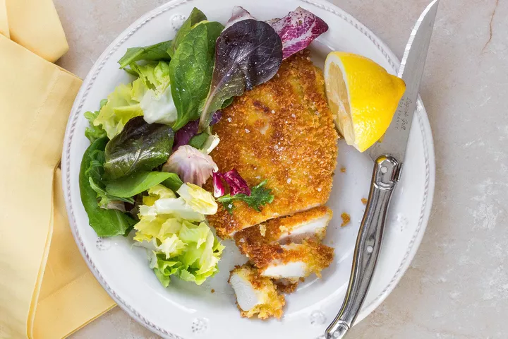

Chicken Milanese

Description
A modification of the more tradional veal, this is an easy main meal to be paired with a side, such as a salad and potatoes.
Ingredients
- Chicken Breast
- Breadcrumbs
- Flour
- Butter (or neutral oil)
- Parmesan
- Eggs
Method
- Flatten the chicken to the height of a £1 coin.
- Dredge the chicken in a mixture of salt, pepper and flour, then the beaten eggs.
- Add the chicken to a mixture of parmesan and breadcrumbs.
- Melt the butter in a cast iron pan on a mid heat or neutral oil on a high.
- Add the breaded chicken until golden brown on the outside and cooked in the middle.
- Serve with choice of sides.